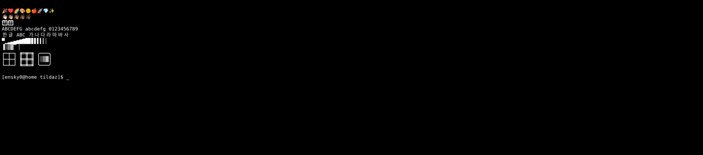

Not one compositor only
TildaZ tracks the desktop-specific paths needed for drop-down placement and hotkey behavior across the major Wayland environments.
- KDE Plasma
- GNOME
- Cinnamon
- COSMIC
- Hyprland
- sway
Linux Wayland
TildaZ is a direct Wayland client for Linux. It targets the Quake-style workflow on KDE Plasma, GNOME, Cinnamon, COSMIC, Hyprland, and sway without requiring an Electron, GTK, or Qt runtime.
TildaZ tracks the desktop-specific paths needed for drop-down placement and hotkey behavior across the major Wayland environments.
The Linux host is a direct Wayland client with the fast libghostty-vt terminal core. It is Wayland-only and does not include an X11 backend.
Linux support includes HiDPI / fractional scaling paths, fcitx5 / IME support, true color, ligatures, emoji, procedural box-drawing, and smooth shaded blocks.
Packages
./install.sh for desktop file and icon setup.Actual Capture
